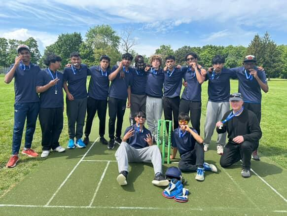
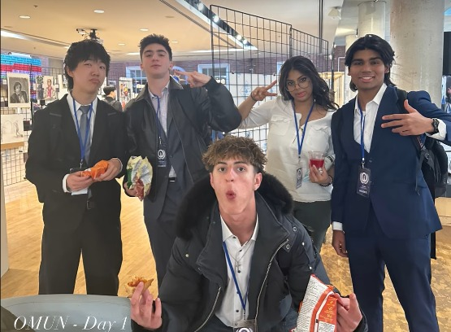
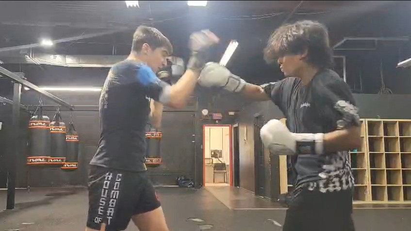

A school recognition that reminded me how much consistent effort matters.
Outside the classroom
Experience & achievement.
My experiences outside class show the parts of me that marks cannot fully explain. Sports, clubs, competitions, and volunteering have helped me build confidence, discipline, and the ability to keep going when something is difficult.
Clubs and extracurriculars

Cricket Team
Cricket helped me build teamwork, focus, and patience. It taught me that performance comes from practice, communication, and trusting the people around you.

Model United Nations
MUN pushed me to think about world issues from different perspectives. It also helped me improve my research, speaking, and confidence when explaining ideas.

Boxing Training
Boxing taught me discipline in a direct way. It reminds me that improvement takes repetition, control, and the ability to keep showing up even when it is tiring.
🌙
Muslim Student Association
General Member · October 2024 to PresentMSA gave me a space to connect with others, stay grounded in my identity, and feel more involved in the school community.
💼
FBLA Canada
Member · March 2026 to PresentFBLA helped me explore business, leadership, and competition. It taught me that strong ideas need creativity and structure.
🤖
WLMAC FTC Outreach Team
Outreach / Marketing Associate · April 2026 to PresentFTC outreach lets me connect technology with communication, design, marketing, and sharing a STEM team’s work.
Recent achievements
The work I am proud of.
An academic achievement that reflected my effort across my courses.
A sports achievement built on teamwork, practice, and staying focused under pressure.
A finance and presentation competition that challenged me to think clearly and defend my ideas.
A case competition that pushed me to research, build a strategy, and explain a solution with confidence.
A technology achievement that showed me how coding, teamwork, and creativity can come together quickly.
Volunteer experience
Mesjid Al Sabur
20 hours · April 2024 to PresentI helped with maintenance and community support tasks. This taught me that helping behind the scenes still matters because it keeps a community space clean, useful, and welcoming.
Math Tutoring
Roxas Family · 10 hours · March 2025 to PresentTutoring helped me become more patient and clear when explaining ideas. It also showed me that understanding something is different from being able to teach it well.
Moving Helper
Alvarado Family · 16 hours · June 2025Helping with a move was simple but meaningful work. It taught me responsibility, effort, and the value of being useful when someone needs support.